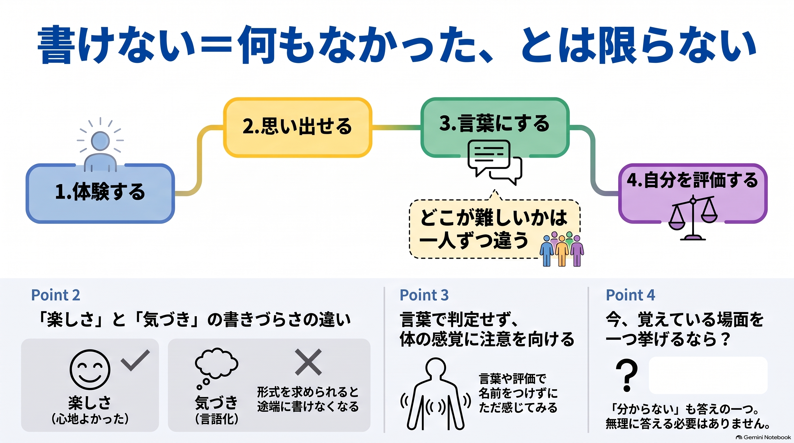

言葉にならないと、何もなかったことになる？
感じたこと。思い出せること。言葉にまとめること。それを自分でどう評価するか。似て見えるけれど、別々に見られることかもしれません。
今回は、参加者の体験の振り返りから、気づき・観測へと対話が進みました。気づきの言葉の意味も、一人ひとり違います。
まず分けて眺めてみる
体験
どんな場面があったか。
どんな場面があったか。
思い出す
今、どこまで覚えているか。
今、どこまで覚えているか。
言葉にする
一語になるか、文章になるか。今はならないか。
一語になるか、文章になるか。今はならないか。
評価
そのことを、どんな言葉で数えているか。
そのことを、どんな言葉で数えているか。
これはAIが整理した見取り図です。人の内面の原因を確定したものではありません。
短い実験を一つだけ
座面や足の裏など、今、体が触れているところへ少し注意を向けてみる。何か分かっても、分からなくても、そのままで。
浮かぶ考えを止める必要はありません。つらさが増えたら、続けず周りを見たり、休んだりして大丈夫です。
受け取りやすい形で
文章・動画・音声・スライド・一枚図解。気になるものを一つだけ選んでください。全部を見る必要はありません。
アーカイブ動画
音声教材
スライド資料
一枚図解

音声・スライド・図解は今回の一次音声からNotebookLMで制作し、薫ちゃんが確認した教材です。整理や比喩は理解のための一つの見方で、個人の内面や原因を確定する診断ではありません。